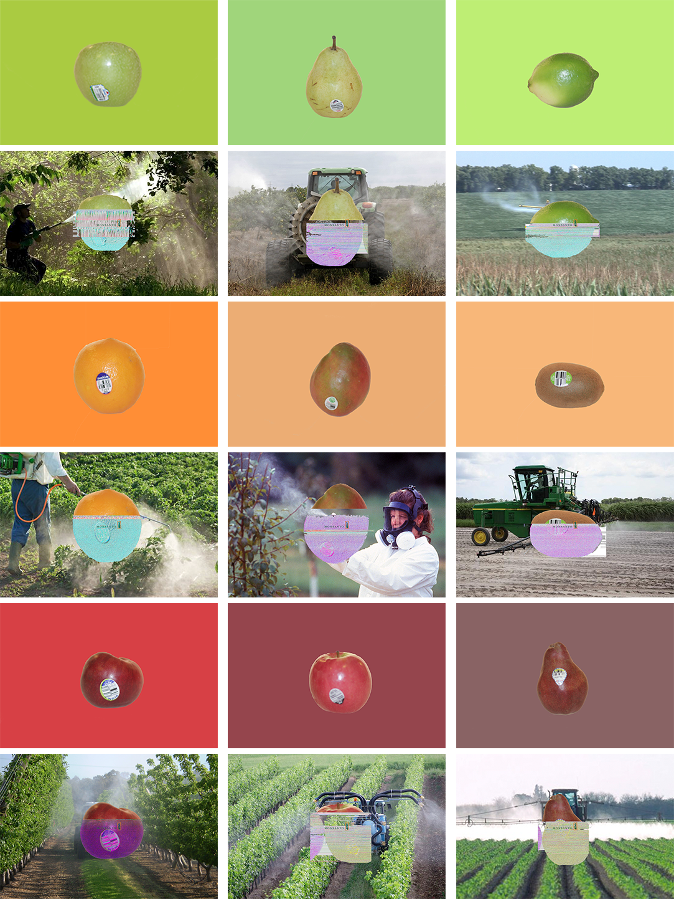

Fruit Fuck Up
It was my last semester of my final year of undergrad when my professor, Jason VanStaveren, gave us this project. It took me a while before I knew how to approach it, you see the task was to destroy something and reconstruct a new image. We weren’t limited to any type of medium but the work had to presented either digitally or in prints.
So, I had the task but now I had to figure out how to go about deconstructing and then rebuilding with a purpose. At the time of the project I had begun a switch to a healthier lifestyle and therefore would often buy a lot more fruits and foods I thought to be healthy. But, it turns out I was not exactly right . . .
While on a FaceTime call with my brother in Ghana I noticed the size of his tomatoes and how much smaller they were than the one’s I would see in Walmart. His produce was grown in the neighborhood and I had no idea where mine came from, I decided then that this is what I would destroy and build.
The Approach
Now that I knew what I would deconstruct and build I had to figure out how I would go about doing it. I decided on purchasing some fruits of different shades from Walmart and I didn't go for the organic ones but instead I went for the usual ones I would always get.
I wanted to display the corruption within the fruits so I came up with the concept of displaying the one fruit in two different ways. The first would be a clean picture with a solid background and the other would be a "messed up" fruit on a background that tells a story.
I began by taking photos of all the fruits and then picking out a color from the fruit itself to use as the backdrop for the clean image.
The Breakdown
This was the part I had the most fun with. It took me a while to come up with this method so honestly I'm a bit proud of myself. But, let's get into it.
I began by doing some research as to how things that were seen as healthy such as fruits and vegetables cold actually be bad for you and or corrupted. A lot of the sources and sites I stumbled upon referenced GMO's and one main company in particular. Monsato. I looked into them some more and saw that they were one of the largest manufactures of GMO products in the United States. After gathering all the information I decided to settle on them as the tool I would use to deconstruct these fruits. In the metophorical sense.
Spoiling The Fruit
For this section of the project I decided to search through Google Images for photos of workers spraying pesticides on to crops and vegetations. After I found enough of them I assigned one to each of the fruit that I had purchased from Walmart. Next I opened the images of the fruit in a text editor so that I could see the code that made it what it was. Then I placed the Monsata company pledge inside the file and saved it. The image then became corrupted and distorted which I thought was a great symbolgy for what they were doing to the fruits.
To make the message a bit more clear but still subtle I placed the companys logo right in the middle of the fruit. In plain sight but hidden by the corrupted image.
The companys pledge can be found here.
Final Result
After placing all the non-corrupt images on the clean background and the corrupted images on the corrupted backgrounds I organized them into a grid. The layout was designed so that you could see the clear differences between the images. Made me think about how the fruits are presented in Walmart versus how they actually are or should be presented.
